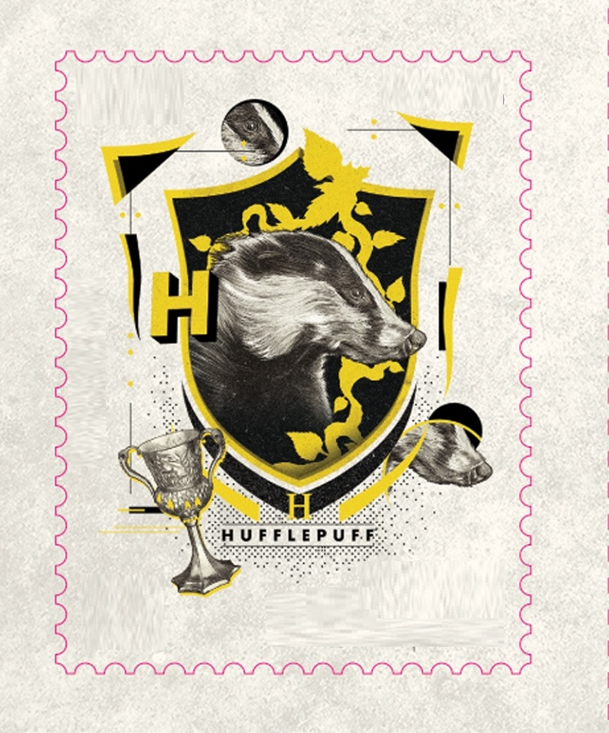

Personagens Principais
História Lufa Lufa
Nome em inglês: Hufflepuff
Criador por: Helga Hufflepuff
Animal símbolo: Texugo
Fantasma: Frei Gorducho
Membros mais conhecidos são: Newt Scamander, Cedrico Diggory, Ninfadora Tonks e outros.
História: Os estudantes da Lufa-Lufa são dedicados, pacientes e honestos. Suas admiráveis características os tornam trabalhadores árduos e modestos, sendo receptivos a todos os demais tipos de bruxos. Por outro lado, o excesso dessas qualidades pode se tornar um ponto negativo: justamente por sua flexibilidade e compreensão, os alunos podem ser complacentes e muito dependentes de outras pessoas, tornando-se ingênuos.